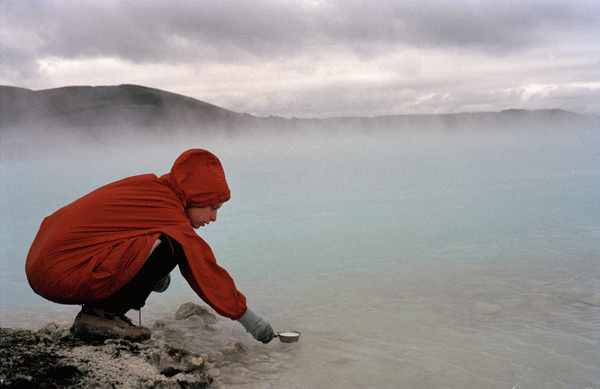
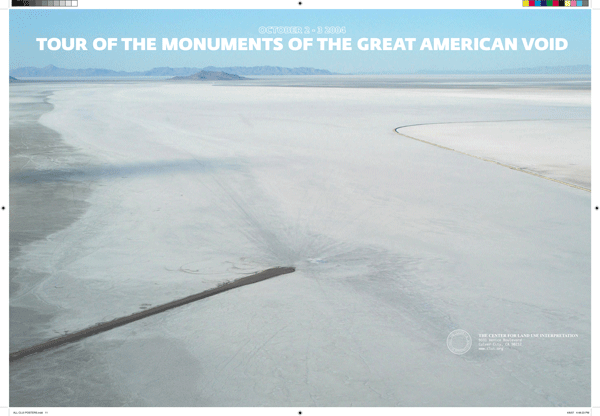
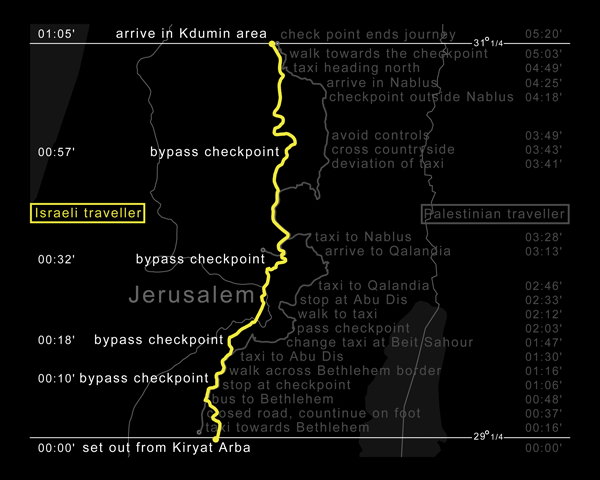

-
Experimental Geography at iCI
by Persis Singh July 23, 2010
Experimental Geography, an exhibition curated by Nato Thompson and organized by iCI,
encompasses a diverse array of practices, spanning collaborative research, poetic gestures,
and alternative cartography. The common thread linking these disparate conceptual approaches is an engagement with geographic study and a preoccupation with our spatial experience of the earth. Falling under the rubric of ‘experimental geography,’ a term coined by Trevor Paglen, such work refers to a type of interdisciplinary cultural production, whose experimental nature combines academic research with aesthetic practice to explore both physical and human geography. These practices crisscross the borders of empirical research and poetic intervention, highlighting the various politics at play in our understandings and interactions with the spaces we inhabit.Throughout the exhibition, many works encompass varying forms of collaborative research, adopting didactic systems and pedagogical frameworks––as seen with the Center for Urban Pedagogy and the Center for Land Use Interpretation. Work by Yin Xiuzhen, Alex Villar and kanarinka, among others, similarly draw from this mode of spatial investigation, yet these practices comfortably live within the poetic realm of ‘art.’ Radical cartography is explored as a vital form of activism by a number of practitioners, from Lize Mogel, Ellen Rothenberg, to Daniel Tucker’s project, the We Are Here Map Archive. The potency of this exhibition lies in its focus on practices that are inherently interdisciplinary, where the categorical spheres of contemporary art, geography, and activism are discarded and replaced by a dynamism where these fields can interrelate and reflexively inform each other. As Nato Thompson asserts, the field of experimental geography is derived from moments of ‘theoretical rupture,’ where artists, educators and activists effectively unfold into other disciplines, in order to widen their modes of spatial inquiry. Blurring the lines between aesthetics and politics, such practices adopt a multiplicity of forms to traverse a wide cross-section of contemporary visual culture.
In Francis Alÿs’ The Making of Lima, or the video documentation that chronicled the work When Faith Moves Mountains, the artist utilizes the beau geste, or poetic gesture, to convey the power of collective agency. In April of 2002, Alÿs enlisted 500 volunteers equipped with shovels to move a large mountain of sand outside of Lima, Peru, by a matter of a few inches. While the actual displacement of the physical environment was perhaps imperceptible, its metaphorical significance and implications were not. Through this Sisyphean act of ‘geological dislocation,’ Alÿs’s collaboration becomes a compelling symbol of collectivity—one whose mythic afterglow and open-endedness activates countless subsequent interpretations and discourses. This poeticism is also present in Ilana Halperin’s Boiling Milk (Solfataras), which examines the connection between the immensity of geological phenomena and the intimacy of individual human processes. Influenced by her discovery that the growth of human fingernails mirrors that of tectonic plates, Halperin unites an everyday domestic act with a natural geologic occurrence–– conflating the lyrical with the scientific, bridging public and private––by boiling milk in a natural hot spring. Her project Towards Heilprin Island was conceived after contemplating the strange similarity between her surname and the Heilprin glacier. Through a combination of preliminary research and a voyage to the Northeast polar region of Greenland, followed by a series of etchings and a take-away booklet of anecdotal writings, the artist continues to explore the duality between the familiar and the geologically sublime.
Diverging from the more lyrical and open practice of Alÿs and Halperin, other artists engage with more definitively politicized contexts. In The Road Map, a two-channel video projection, accompanied by four-channel video on monitors with color and sound, Multiplicity investigates the geography of exclusion of the Israeli-Palestinian border, tracing divisive circuits of inequity and oppression. The installation chronicles the journey of two people between almost identical latitudinal points; the only difference being that one holds an Israeli passport, while the other is a Palestinian citizen. Through meandering documentary footage and texts, which are split onto separate video projections and monitors, Multiplicity’s spatial experiment calls attention to the systems of control that create starkly different experiences based on constructs such as nationality, ethnicity and race. Similarly, Trevor Paglen’s practice focuses on geographic sites of non-existence, such as secret military bases and detainment facilities. As seen through his photographs, The Salt Pit (Shomali Plains Northeast of Kabul, Afghanistan) and Black Site (Kabul, Afghanistan), the artist tracks down the locations of covert CIA bases after extensively researching the whereabouts of ‘ghost’ prisoners, as well as referencing the flight patterns of CIA aircraft on public satellite databases. In his attempts at capturing these geographic non-places–– sites outside the law, where basic rights are often suspended ––these infamous ‘black sites’ are reified and brought to light. Thus, Paglen’s documents act as vital markers of the spectral sites that exist as mere figments within official geographic records and political discourse.
Throughout the exhibition, many of the practices tend toward the pedagogical––conceptually rigorous, research-based approaches that deploy a unique visual language to convey either the product of their investigations, or the research process itself. As Thompson states in a recent interview with Daniel Quiles, “Knowledge has a form…[it] is a performance, whether it is the stage of the classroom, or the aesthetics of a typeface in a book, to the performance in a street, to a multi-channel video projection.” In Experimental Geography, the parameters that typically define ‘art’ have collapsed, paving the way for a new generation of artists, researchers and geographers to cross-pollinate across once-rarefied genres and fields. Emerging from the expanded scope of these aesthetic practices, a new topography of visual culture is born––and from amidst these ruptures, we may approach the geography of our planet anew.
Experimental Geography is a traveling exhibition organized and circulated by Independent Curators International (ICI), New York. The guest curator for the exhibition is Nato Thompson.